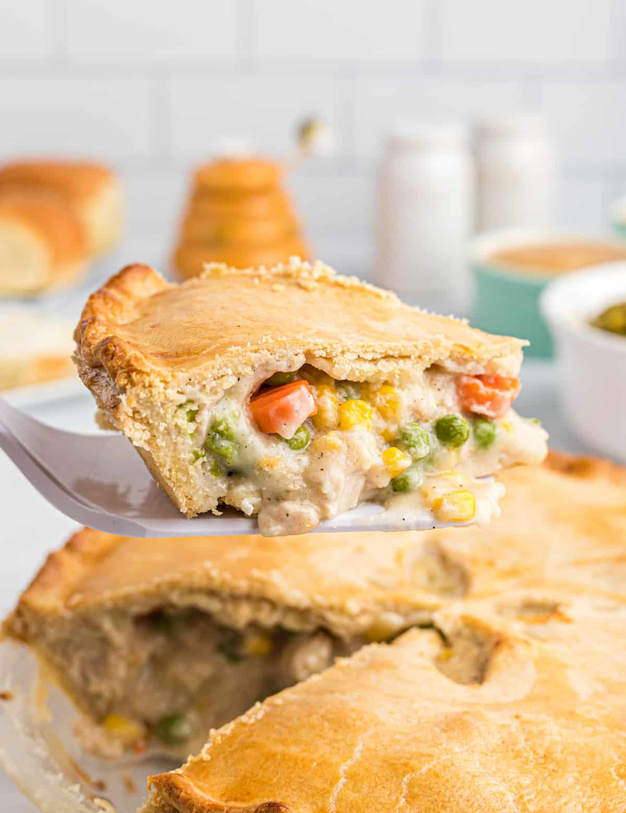

Chicken Pot Pie

Description
This makes a perfect and hearty entree for either lunch or dinner with not much hassle to prepare! We have compiled a recipe for a simple yet delicious dish, but feel free to add in other ingredients that you may desire!
List of Ingredients
- 2 cups of cooked chicken, diced (rotisserie chicken works well)
- 1 can (10.5 oz) condensed cream of chicken soup
- 1 can of mixed vegetables (peas carrots and corn)
- 1 sheet of refridgerated pie crust
- Salt and pepper
Instuctions
- Preheat oven to 400 degrees F.
- Combined the diced chicken, condensed cream of chicken soup, salt/pepper, and vegtables together and stir well.
- Transfer mixture to a baking dish
- Place pie crust over the top of the baking dish, covering the chicken and vegtable mixture. Press down the edges of the crust to seal it with the dish.
- Cut a few slits in the crust allowing it to steam during baking.
- Bake for 25-30 minutes or until the crust is golden brown.
- Let cool before serving and enjoy!